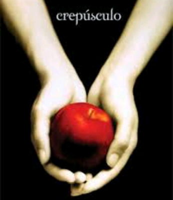

Crepúsculo
Stephenie Meyer
Ano de publicação: 2005
Crepúsculo poderia ser uma história comum, não fosse um elemento irresistível: o objeto da paixão da protagonista é um vampiro. Assim, soma-se à paixão um perigo sobrenatural temperado com muito suspense, e o resultado é uma leitura de tirar o fôlego. Um romance repleto das angústias e incertezas da juventude - o arrebatamento, a atração, a ansiedade que antecede cada palavra, cada gesto, e todos os medos.